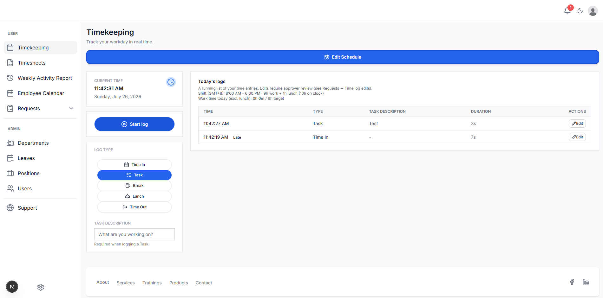
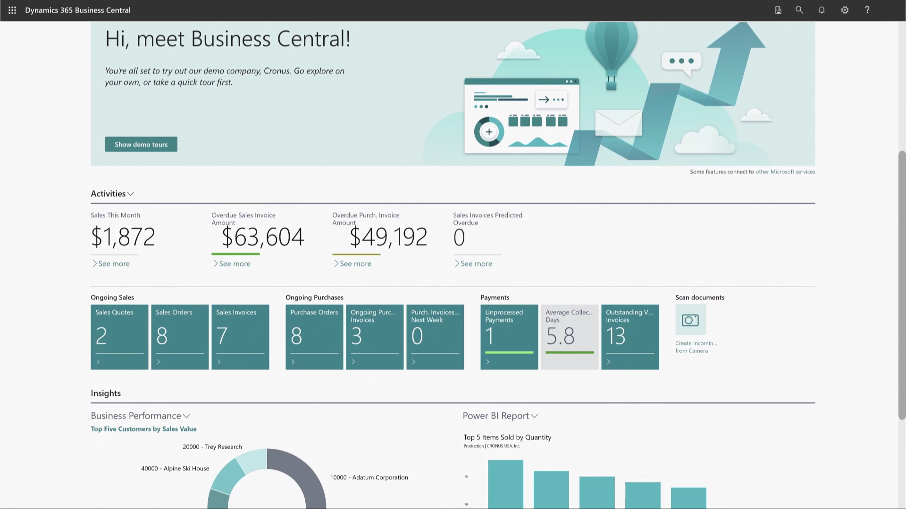
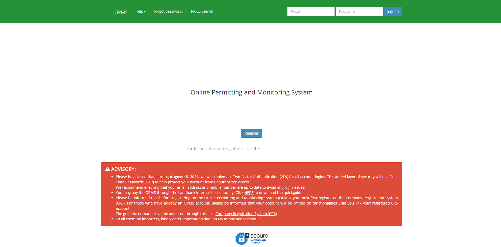
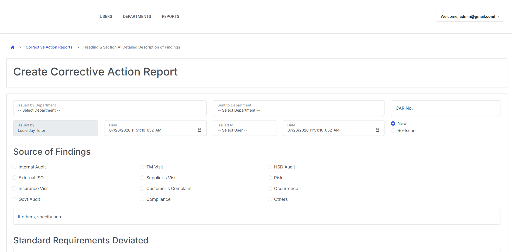

Enterprise systems and web platforms built for reliability at scale.

Full-featured time tracking system with attendance monitoring, leave application, and reimbursement modules. Automated employee workflows, cutting manual processing time by 40%.

Configured financial and inventory modules within Microsoft 365 Dynamics Business Central, improving tracking accuracy and cutting reporting discrepancies by 25% and data processing latency by 30%.

Updated system features to align with evolving client needs, improving workflow automation and usability, while maintaining backend logic to reduce downtime and improve application stability.

Enhanced business-requirement-driven reporting features, improving reporting accuracy and reducing manual errors while optimizing overall system performance and reliability.
Integrated CRM suite with a core CRM module, real-time monitoring dashboard, and ticketing management, supporting end-to-end client operations. Improved user efficiency by 20% and cut response time by 15%.